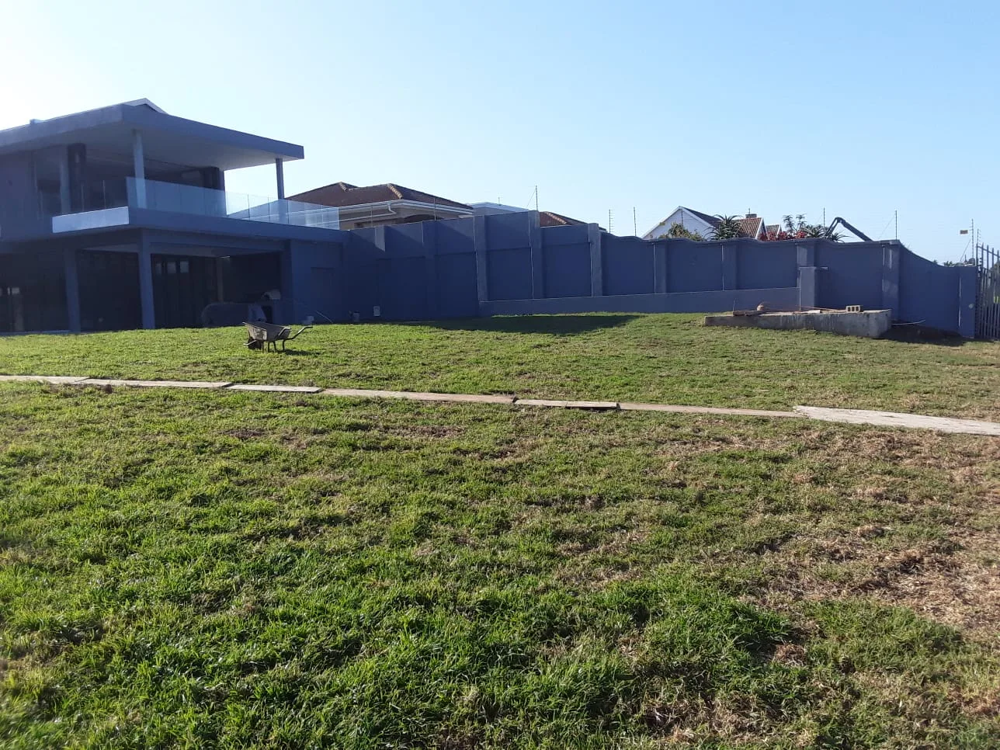

Your lawn area
Provide square metres or your length and width measurements. Add a small allowance for cutting and shaping.
Supply & delivery enquiries
Order natural instant lawn through our Pietermaritzburg or Durban branch. Share your quantity and location so we can confirm supply and discuss the available delivery options.
Branches in Pietermaritzburg & Durban



Local branches, helpful service
Every supply enquiry starts with a few simple details: where you are, how much lawn you need and whether the ground is ready. This helps the team discuss availability and the practical next steps.
Delivery options depend on your location and order. Contact the team directly to confirm what is available rather than assuming a standard delivery arrangement.
Send your location and quantityWhat to have ready
Provide square metres or your length and width measurements. Add a small allowance for cutting and shaping.
Share your suburb or town and any useful access information so delivery options can be discussed.
Let us know when you plan to prepare and lay the lawn so supply and freshness can be considered.
How to enquire
Calculate your area and decide whether you need extra for shaping.
Send your quantity, location and preferred project timing.
Discuss turf availability and collection or delivery arrangements.
Have the ground ready and plan to lay and water the turf promptly.
Supply & delivery FAQs
GRASS EN ALL has branches in Pietermaritzburg and Durban and serves customers across KZN. Send your location and quantity to confirm the available options.
Contact your preferred branch to discuss collection availability, timing and the quantity you plan to transport.
Plan preparation so the area is ready when the turf arrives. Prompt laying and thorough watering are important for fresh natural turf.
Related services
Real natural grass for an immediate garden transformation.
Learn moreGet the soil clear, level and ready before your turf arrives.
Learn moreCareful placement and neat fitting for a polished result.
Learn moreNeed turf for your space?
Contact GRASS EN ALL to discuss supply, collection or delivery options.